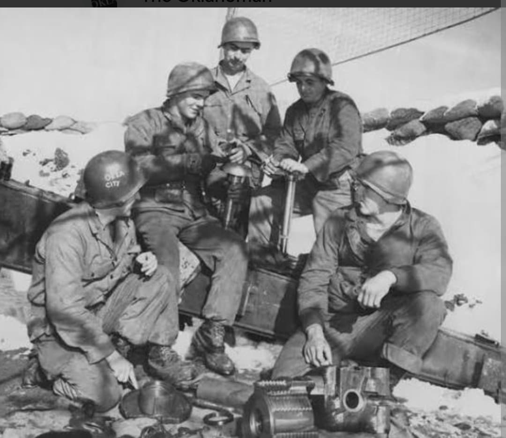
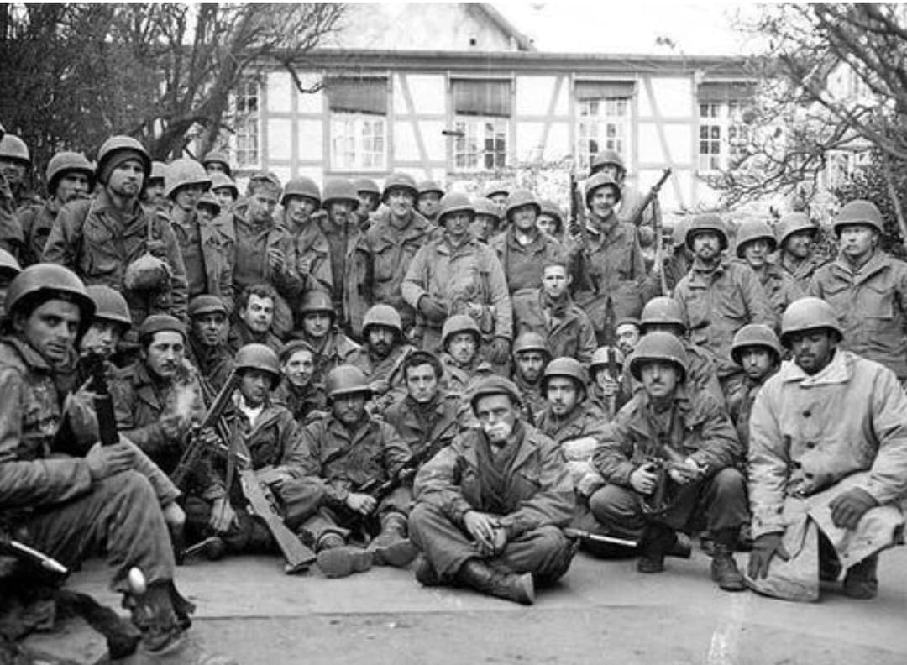

Introduction
Surnommée **« Thunderbird »** (l'Oiseau de Tonnerre, symbole mythologique amérindien réorganisé sur leur insigne après le retrait d'une swastika amérindienne traditionnelle dans les années 1930), la **45th Infantry Division** regroupe à l'origine des gardes nationaux de l'Oklahoma, du Nouveau-Mexique, du Colorado et de l'Arizona, comptant dans ses rangs un fort pourcentage d'Amérindiens.
Considérée par le général George S. Patton comme l'une des meilleures divisions de l'US Army, la 45e Division a mené **quatre débarquements amphibies majeurs** (Sicile, Salerne, Anzio, Provence) et accumulé plus de 511 jours de combat acharné du sud de l'Europe jusqu'au cœur de la Bavière.
1943–1944 : L'enfer méditerranéen et la tête de pont d'Anzio
En juillet 1943, la 45th Division débarque en Sicile (**Opération Husky**), s'illustrant dans des combats brutaux en terrain montagneux. Deux mois plus tard, elle participe au débarquement de Salerne (**Opération Avalanche**), où elle repousse les contre-attaques blindées de la Wehrmacht pour sceller la tête de pont alliée.
En janvier 1944, la division est projetée lors du débarquement d'**Anzio** (*Opération Shingle*). Enfermés pendant quatre mois dans un périmètre étroit sous un pilonnage permanent de l'artillerie et de l'aviation allemande, les « Thunderbirds » résistent avec un courage héroïque à la grande contre-offensive de Kesselring avant de percer vers Rome en juin 1944.

1944 : L'Opération Dragoon et la percée en Alsace
Rattachée à la 7e Armée du général Patch, la 45th Infantry Division débarque sur les côtes du Var le 15 août 1944 dans le cadre du **débarquement de Provence** (*Opération Dragoon*). Remontant la vallée du Rhône à grande vitesse, elle libère Épinal en septembre.
En automne et hiver 1944, la division mène de sanglants combats dans le massif des **Vosges** et en Alsace. Face à l'opération allemande *Nordwind* en janvier 1945, la 45e Division stoppe l'ennemi dans le secteur dur de Reipertswiller au prix de lourdes pertes.
1945 : La ligne Siegfried, Dachau et la prise de Munich
En mars 1945, les Thunderbirds franchissent la ligne Siegfried et traversent le Rhin à Worms. Ils mènent une lutte féroce pour capturer la ville d'Aschaffenbourg puis la forteresse historique de Nuremberg en avril 1945.
Le **29 avril 1945**, les unités de la 45th Division (conjointement avec la 42nd Infantry Division) découvrent et **libèrent le camp de concentration de Dachau**, confrontées aux horreurs innommables du système concentrationnaire nazi. Le lendemain, la division pénètre dans Munich, berceau du parti nazi, achevant la guerre sur une victoire totale.

Voir aussi
Page du Musée HOP WW2 – Section Unités & Divisions Célèbres